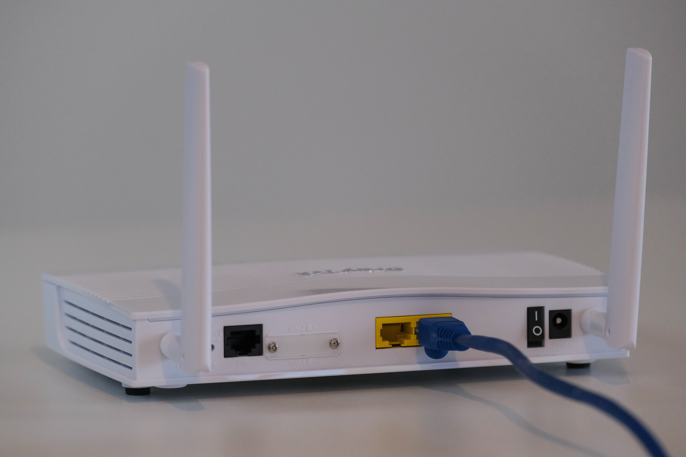

Routers
Routers are used to wirelessly connect devices to the internet.
When a device wants information, it sends a request to a server and in return is sent back data in packets of binary. Each packet has the IP address of where it came from and where it is going, and a network of routers create a path for the data to travel along. Routers act like traffc managers to make sure data flows as efficiently as possible. This makes the process fault tolerant and scalable.
Buy a router